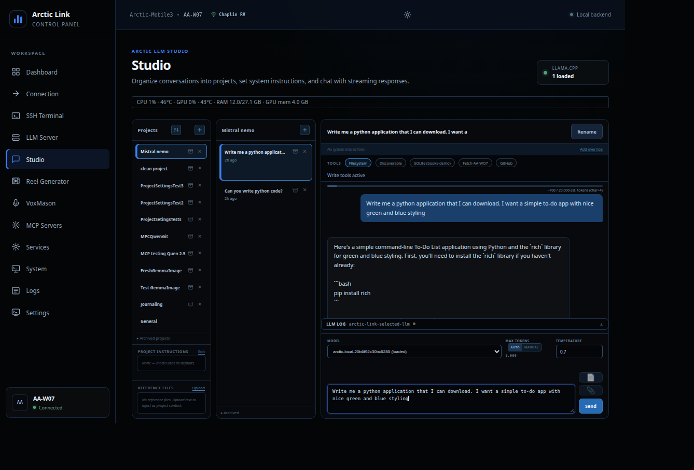
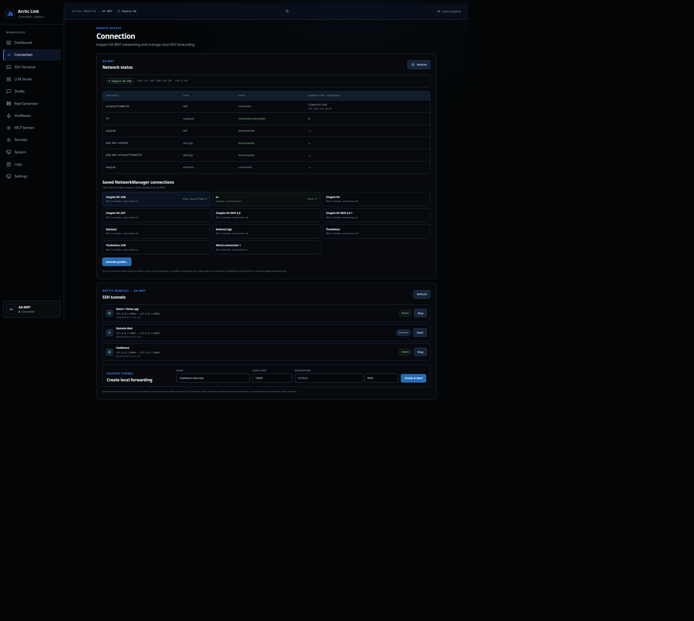

Quinnix Software — Project
Arctic Link
A Linux workstation and local AI management application. What began as a small SSH connection widget has evolved into a comprehensive tool for managing remote systems, monitoring hardware, and running local language models.
The Origin
From Widget to Workstation Manager
Arctic Link started as a small utility to solve a specific problem: managing SSH connections to a remote Linux computer without remembering hostnames, ports, and key paths. Rather than keeping notes or typing the same commands repeatedly, the idea was a lightweight interface that handled the connection details.
That utility worked well enough that it became a daily tool. And daily tools have a way of accumulating new needs. What could also show CPU temperature? What if it displayed network traffic? What if it could manage locally hosted AI models?
Each addition made the application more useful, and together those additions became something meaningfully larger than the original widget. That progression — from widget to working application — is exactly what Quinnix is about.
Today, Arctic Link integrates with the Arctic-Audio Linux workstation and serves as a central management interface for local hardware, remote systems, and locally hosted language models.




Two real application views — click to enlarge
What It Does
Key Capabilities
Manage saved SSH connections to remote Linux systems. Launch sessions, handle key-based authentication, and maintain connection profiles without memorizing details.
Monitor network interfaces, check connectivity, and manage network-related configuration for local and remote systems.
Real-time system stats including CPU, memory, disk usage, and hardware temperatures for the local workstation and monitored remote machines.
Install, run, and manage locally hosted large language models. Control model availability without relying on external API services.
Interact with locally hosted LLMs through a conversation interface. Conversation history is stored locally, keeping interactions private and persistent.
Connects with the Arctic-Audio Linux workstation setup, providing unified access to audio hardware, monitoring, and related system controls.
Development Status
Current State
Arctic Link is an actively developed personal tool. Core functionality is in daily use; capabilities continue to expand as new needs emerge from real workstation use.
The application is not currently available for public download. No public release date is planned at this time.
Feature Status
Technologies